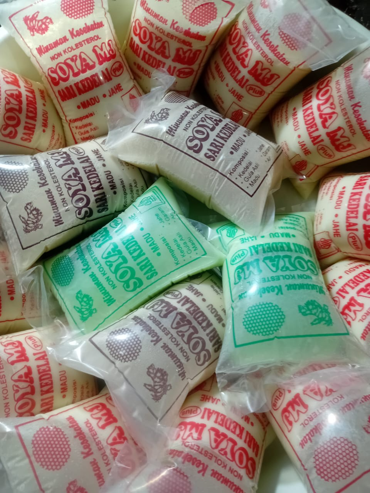

USAHA LOKAL
Susu Kedelai "SOYA"
Soya adalah brand minuman susu kedelai lokal yang menyajikan minuman berbahan dasar kedelai. Informasi bahan, kandungan gizi, dan proses produksi dapat dikonfirmasi langsung kepada pemilik usaha.